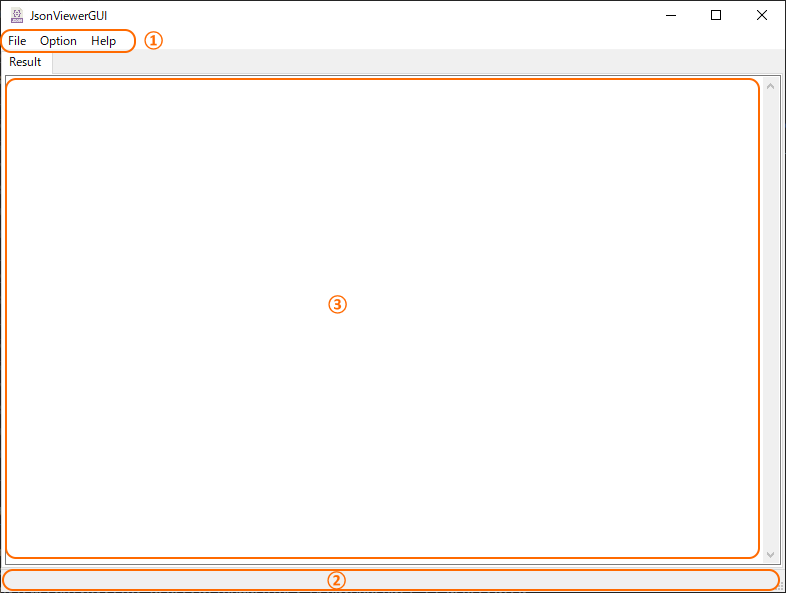
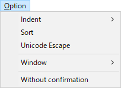
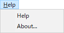

JSONファイル整形表示ツール - JsonViewerGUI (JsonViewer) -
§各部の名称
※UIの表記が英語なのは、GUIデザインツール(wxGlade)がShift-JISに対応していないためです。※

- メニューバー
メインメニューです。
詳細は「メニューの説明」を参照してください。
- ステータスバー
操作結果のメッセージが表示されます。
- 整形プレビュー
整形後のJSON文字列が表示されます。
§使い方
-
JSONファイルの整形と保存
- [File]-[Open...]メニューでファイル選択ダイアログを開き、整形するJSONファイルを選択するか、
整形プレビュー（③）に、JSONファイルをDropすると、整形して表示します。
- [File]-[Save...]メニューでファイル保存ダイアログを開き、保存ファイル名を指定します。
予め「元のファイル名_formatted.json」がデフォルトのファイル名として用意されます。
既存のファイル名を指定した場合は、上書きするかどうかの確認がされます。
-
整形パラメータの設定
- [Option]-[Indent]のサブメニューで、インデントの文字数が選択できます。
デフォルトは「４文字」です。
- [Option]-[Sort]をチェックすると、「Key」を昇順ソートして整形します。
デフォルトは「ソートなし」です。
- [Option]-[Unicode Escape]をチェックすると、Unicode文字列はエスケープ表記に変換します。
デフォルトは「エスケープなし」です。
- [Option]-[Window]-[Stay on Top]をチェックすると、ツールのウィンドウをデスクトップ最前面に固定します。
デフォルトは「固定なし」です。
- [Option]-[Window]-[Remember Current Window pos.]をチェックすると、ツール終了時のウィンドウ位置を記憶して次回起動時に再現します。
デフォルトは「記憶なし」です。
- [Option]-[Without comfirmation]をチェックすると、ツール終了時に確認ダイアログを出さずに終了します。
デフォルトは「確認ダイアログあり」です。
- 以上の設定は、ツール終了時に設定ファイル（JsonViewer.ini）に保存されます。
§メニューの説明
| メニュー |
説明 |
 |
[Open...] - 整形するJSONファイルの選択
[Save...] - 整形済みJSON文字列の保存
---
[Exit] - アプリケーションの終了 |
|  |
[Indent] - インデント文字数の指定 (0, 2, 4, 8)
[Sort] - JSONのKeyを昇順ソート
[Unicode Escape] - Unicode文字列をエスケープ表記
---
[Window]-[Stay on Top] - ウィンドウを最前面に固定
[Window]-[Remember Current Window pos.] - 前回終了時のウィンドウ位置の復元
---
[Without confirmation] - ツール終了時の確認ダイアログなし |
|  |
[Help] - Manual.htmlを開く
[About] - バージョン情報の表示 |
§コンソール版 (jsonviewer)
1. 使い方
- コマンドプロンプトから実行する場合
> jsonviewer [オプション] JSONファイル名
- 「送る」メニューから実行する場合
- 「送る」メニュー(
%APPDATA%Microsoft\Windows\SendTo\)にショートカットを追加します。(オプションはショートカット(プロパティ)に設定します)
- エクスプローラでファイルやフォルダを選択し、右クリックからコピーしたショートカットを実行します。
2. オプションの説明
> jsonviewer -h
usage: jsonview [options] file
JSON fromatting viewer.
positional arguments:
file Please set JSON file name
options:
-h, --help show this help message and exit
-i {0-8}, --indent {0-8}
Indent columns (0-8, default: 4)
-s, --sort Sort by key (True), default: Not sorted (False)
-a, --ensure-ascii UNICODE escape (True), default: Not escaped (False)
-o OUTPUT, --output OUTPUT
Output formatted JSON file name
-V, --version show program's version number and exit